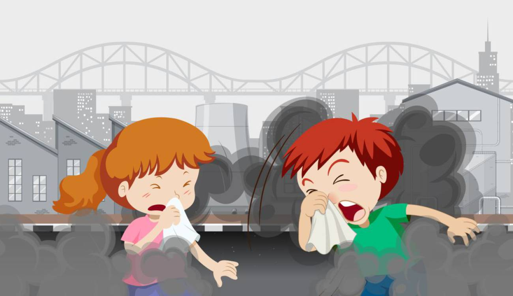
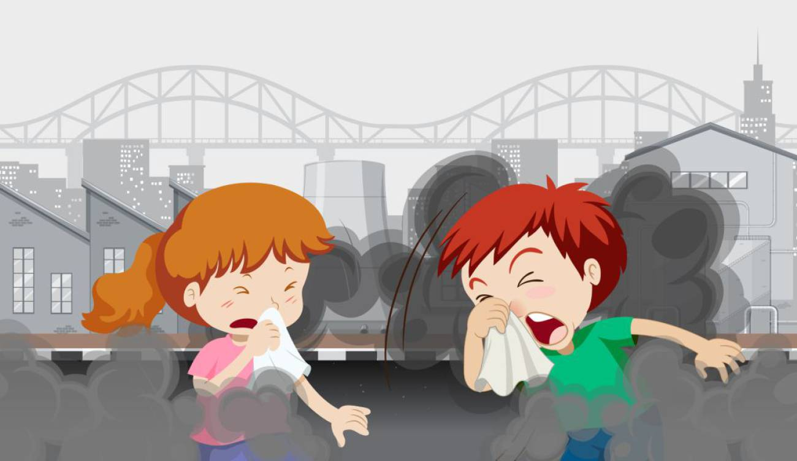

Este es el website que todos esperabamos, un espacio en el que podamos ver una amplia información sobre un problema que abarca todo el mundo y que nosotros somos los principales causantes de el. Podremos ver que el cambio climático tiene sus causas, problemas, consencuencias, pero lo más importante una solución que nos tomará mucho tiempo volverla realidad pues se trata de un trabajo en equipo, en el que todos debemos aportar algo.
A medida que pasa el tiempo, nos damos cuenta de que la responsabilidad de lo que pasa con el clima es prácticamente del 100% del humano, ya que nosotros somos quienes hacemos caso omiso a lo que nos piden para cuidar el planeta. Hay muchas cosas que realizamos que nos pueden beneficiar, pero al mismo tiempo afectan al planeta, así que hay que empezar a analizar como dejamos esos hábitos, después de todo el planeta es nuestro hábitat y lo tenemos que cuidar. Hábitos como fumar, beber agua embotellada, tirar basura en la calle, usar productos desechables, solo usar el auto para desplazarnos y depositar los residuos de la casa en una sola bolsa nos pueden parecer inofensivos, pero es lo que está causando el aumento del nivel del mar, las temporadas de calor, aumento de tormentas, extensión de sequias en zonas afectadas y duración de las mismas, extinción de especies como la tortuga marina, elefante africano, koala, etc. También se está viendo el aumento de alergias, la destrucción de cosechas y producción de alimentos, la acidificación de los océanos por la absorción de Co2, mayor incidencia de enfermedades en los humanos y destrucción de los ecosistemas. Todo esto causado por nosotros.
Estas son algunas de las causas del cambio climático, las cuales hay muchas e incluso podríamos hablar de ellas todo un día.
 

Para lograr que los efectos del cambio climático no tal vez desaparezcan porque sería un trabajo de mucho tiempo pero si disminuyan tenemos que cambiar algunos hábitos de nuestro diario a vivir y así ayudar a nuestro planeta y a nosotros mismos. Las siguientes acciones nos ayudaran a controlar esta situación:
Mi nombre es Laura Vanessa Acuña Ordóñez, nací en Barranquilla, Atlántico, Colombia, y soy una estudiante de 9° que cree que si todos analizamos la magnitud de la situación ahora mismo tendremos la oportunidad de cambiar muchos hábitos de nuestra cotidianidad, se que será difícil, no es fácil que de un día a otro cambien tu forma de vivir, pero sería aún más complejo tener que analizar la idea de desplazarnos a otro lugar porque nuestra ciudad ya no sea adecuada para nuestras necesidades como humanos, estamos a tiempo de lograr controlar la situación, ahora mismo tenemos muchos recursos como la tecnología y debemos aprovecharla para informar a los demás sobre lo que estamos viviendo e inventar cosas que nso ayuden a dejar atrás actividades que generalmente hacemos con combustibles fósiles, lo cuál tiene muchos intereses por medio y hace que tengamos que buscar alternativas que ayuden al planeta y de cierta forma no afecten la economía ni el empleo de miles de personas. Tengo 14 años y me gustaría que las generaciones futuras a mi edad puedan tener un mundo mejor, un mejor medio ambiente en el que no tengan que padecer enfermedades causadas por el cambio climático, donde los sueños y metas no sean destruidas por no querer avanzar y organizarnos más para cuidar nuestro planeta, por eso tenemos que ayudarnos entre nosotros, quien sabe si la persona que tenía una gran idea para combatir todos estos problemas murió por desnutrición o ahora está sin estudio porque su familia perdió todas sus cosas por un fenómeno meteorólogico. Todos tenemos grandes ideas y proyectos, pero para lograrlos no solo necesitamos recursos, necesitamos el apoyo de un mundo entero, porque si somos pocos los que queremos avanzar será muy difícil lograrlo en un tiempo estimado.
Para entender mejor este tema o verlo desde otra perspectiva más real y con hechos les recomendaría que se vieran el documental "Antes de que sea tarde" donde Leonardo DiCaprio con la compañia de expertos explica el tema mostrándonos como eso ha afectado a muchos lugares.